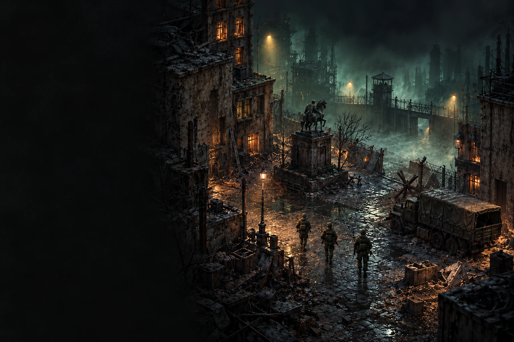
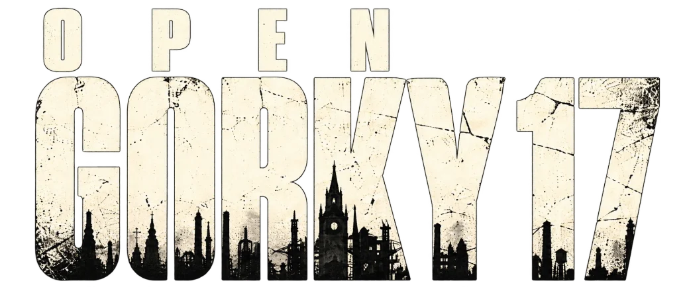
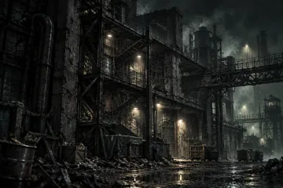
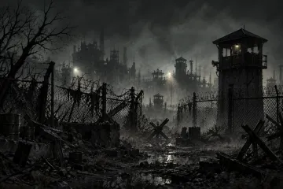

01 / The original atmosphere
Aims to recreate the look, feel and mood that made Gorky 17 unique.

Open-source engine reimplementation

Back inside the perimeter.
A new engine for a city that should have stayed forgotten.
Builds are not linked yet.
Aims to recreate the look, feel and mood that made Gorky 17 unique.
A new engine written in Zig, with a focus on maintainability and openness.

Developed in public by a community that believes great games deserve to live on.

An independent community project rebuilding Gorky 17 in Zig.
ZIGPreserving the atmosphere, systems and spirit of a cult classic through a modern, open-source reimplementation.
Independent fan project.
Not affiliated with the original
rights holders.
Development
Source code, issues and development information are published in the project repository.
Downloads